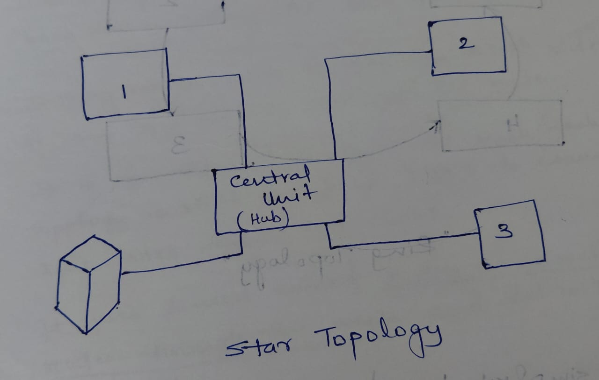

🏛️ Network Architecture Topologies
📌 Overview
Network Architecture refers to the way network devices and services are structured to ensure connectivity, security, and performance. In the cloud, how you connect your VNets matters as much as the VNets themselves.
🕸️ Common Topologies
1. Hub and Spoke (The Azure Favorite) 🌟
This is the most popular architecture in Azure.
- Hub: A central VNet that acts as the point of connectivity to the on-premises network (via VPN/ExpressRoute) and houses shared services (Firewall, DNS, Bastion).
- Spoke: VNets that peer with the Hub to access shared services. Spokes usually host workloads (Apps, DBs).
- Benefit: Centralized management, cost savings (one Firewall for all), and isolation.
ASCII Diagram: Hub and Spoke
[ Spoke VNet A ] [ Spoke VNet B ]
(Workload 1) (Workload 2)
| |
+------------+ +------------+
| |
v v
[ Hub VNet ]
( Firewall, DNS )
( VPN Gateway )
^
| (VPN/ExpressRoute)
|
[ On-Premises ]- Benefit: Centralized management, cost savings (one Firewall for all), and isolation.
2. Star Topology 🌟
- Concept: All devices connect to a central hub.
- Cloud Context: Hub-and-Spoke is essentially a Star topology. The "Hub" VNet is the center, and "Spoke" VNets are the points of the star.
- Failure: If the central Hub fails, the whole network can be impacted (Single Point of Failure), which is why we use redundant Gateways/Firewalls.
ASCII Diagram: Star Topology
(Spoke A) (Spoke B)
| |
+------+-------+
|
[ Central Hub ]
|
+------+-------+
| |
(Spoke C) (Spoke D)
3. Mesh Topology
- Full Mesh: Every VNet connects to every other VNet. (Max Redundancy, High Cost).
- Partial Mesh: Some critical VNets connect to all, others do not.
- Benefit: High redundancy. If one link fails, others exist.
- Drawback: Expensive and complex to manage (N*(N-1)/2 connections).
ASCII Diagram: Full Mesh
[A] ---------- [B]
| \ / |
| \ / |
| \/ |
| /\ |
| / \ |
| / \ |
[D] ---------- [C]
(Everyone talks to Everyone)
4. Bus Topology (Legacy) 🚌
- Concept: All devices share a single communication line (Cable).
- Cloud Context: Not used in cloud networking.
- Drawback: If the main line breaks, the whole network goes down. High collision domain.
ASCII Diagram: Bus Topology
Terminator Terminator
| |
+-------------------------------+ (Backbone)
| | | |
[A] [B] [C] [D]
5. Ring Topology (Legacy) 💍
- Concept: Each device connects to exactly two other devices, forming a circle. Data travels in one direction.
- Cloud Context: Not used virtually, though some fiber backbones (SONET) use rings for redundancy.
- Drawback: One broken node can break the loop (unless dual-ring).
ASCII Diagram: Ring Topology
[A] -------- [B]
| |
| (Data) |
| -> |
| |
[D] -------- [C]
6. N-Tier Architecture (3-Tier)
Not a topology of VNets, but a topology of Subnets inside a VNet.
- Web Tier (Front-end): Publicly accessible.
- Logic Tier (App): Processes data, no direct internet access.
- Data Tier (DB): Holds data, locked down completely.
ASCII Diagram: 3-Tier
(Internet)
|
[ Web Tier ] <-- Public Subnet
|
[ App Tier ] <-- Private Subnet (Business Logic)
|
[ DB Tier ] <-- Private Subnet (Data)💡 Hinglish Explanation (Head Office)
1. Hub and Spoke (Head Office vs Branches)
- Hub (Head Office): Saara management, security guard, aur main internet connection yahan hai.
- Spoke (Branch Offices): Har branch (HR, Sales) apna kaam karti hai. Agar unhe bahar (internet) jana hai ya ek dusre se baat karni hai, toh wo pehle Head Office se connect karte hain.
- Benefit: Har branch mein alag security guard rakhne ki zarurat nahi.
2. 3-Tier (Restaurant)
- Web Tier (Waiter): Customer se order leta hai (Public facing).
- App Tier (Kitchen): Order process karta hai/khana banata hai (Logic).
- DB Tier (Store Room): Raw material rakhta hai. Customer kabhi store room nahi jata, sirf waiter kitchen se mangwata hai.
⚡ Exam Tips for AZ-900
- Hub-Spoke: If an exam question mentions "Centralized management of connectivity" or "Shared Firewall", the answer is Hub and Spoke.
- Security: In 3-Tier, use NSGs to ensure the DB Tier accepts traffic only from the App Tier, not the Web Tier or Internet.
- Peering: In a Hub-Spoke, Spoke A cannot talk to Spoke B unless you specifically enable it (via NVA/Firewall in Hub).